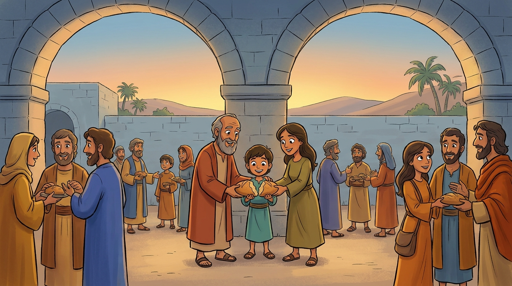

1The early church in Jerusalem was growing fast. People shared their food, their money, and their lives together. It was beautiful, but it was also messy. When you put thousands of people together, somebody always gets missed.
“Now in these days when the disciples were increasing in number…” — Acts 6:1